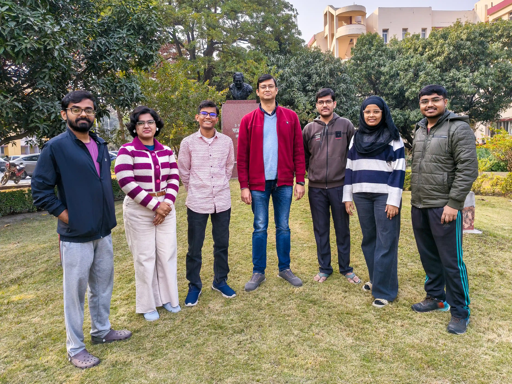

Welcome to the Computational (Bio)Physical Chemistry Group at S. N. Bose National Centre for Basic Sciences, Kolkata. Our research lies at the interface of chemistry, physics, and biology — driven by the power of molecular simulations and statistical mechanics.
We aim to unravel how molecular interactions shape structure, dynamics, and function in complex systems. Our interests span from the behavior of small molecules like water to the collective properties of biomolecular assemblies and amphiphilic self-organization.
By connecting molecular thermodynamics to emergent phenomena, our group seeks to bridge the microscopic and macroscopic worlds— advancing our understanding of the molecular machinery of life.
We are looking for bright and motivated students curious to unravel the mysteries of nature from a molecular point of view! Interests in physical chemistry, biophysics, statistical mechanics, and programming are highly desirable.
For the admission process in our centre, please consult the official admission page.
Admission DetailsIf you are looking for a postdoctoral researcher position, please explore the Advanced Postdoctoral Research Programme.
APRP InfoShort-term project or postdoctoral research positions might open up from time to time.
Contact Us